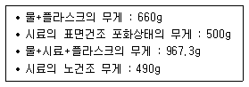
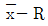
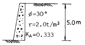
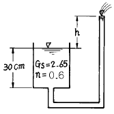
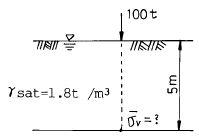

건설재료시험산업기사 (2004-03-07 기출문제)
1과목: 콘크리트공학
1. 고강도 콘크리트에서의 양생방법으로 틀린 것은?
- 건조양생시켜 강도가 빨리 발현되도록 한다.
- 경화 때까지 진동을 주지 않는다.
- 경화 때까지 직사광선을 피한다.
- 부재 두께가 0.8m이상이면 매스콘크리트의 양생방법을 따른다.
(정답률: 84%)

2. 다음 중에서 강섬유보강콘크리트로 제조했을 때 가장 효과가 적다고 예상되는 구조물은?
- 도로의 포장
- 공항의 활주로
- 터널 및 수로의 라이닝(lining)
- 댐의 차수면
(정답률: 46%)
3. 콘크리트 구조물의 유지관리를 위한 콘크리트 강도 검사법이 아닌 것은?
- 슈미트 해머법
- 중성화 측정법
- 코아 공시체 강도에 의한 방법
- 초음파 검사법
(정답률: 64%)
4. 국내의 레디믹스트 콘크리트 운반차량으로 가장 많이 사용되는 것은?
- 트럭믹서
- 덤프트럭
- 콘크리트 펌프카
- 에지테이터 트럭
(정답률: 알수없음)
5. 다음 중 굳지 않은 콘크리트의 워커빌리티 측정방법이 아닌 것은?
- 구관입 시험
- 비비 시험
- 콘 관입 시험
- 리몰딩 시험
(정답률: 알수없음)
6. 일반적인 수중콘크리트에 관한 설명 중 틀린 것은?
- 트레미는 콘크리트를 치는 동안 수평 이동시켜서는 안 된다.
- 수중콘크리트의 물-시멘트비는 50% 이하가 표준이다.
- 수중콘크리트의 슬럼프는 5∼8cm의 된반죽으로 해야한다.
- 수중콘크리트의 단위시멘트량은 370kg/m3 이상이어야한다.
(정답률: 알수없음)
7. 경량골재콘크리트의 배합에 대해 맞지 않는 것은?
- 경량골재콘크리트는 AE콘크리트로 하는 것을 원칙으로 한다.
- 경량골재콘크리트의 공기량은 보통골재를 사용한 콘크리트 보다 2% 작게 해야 한다.
- 슬럼프는 일반적인 경우 대체로 5∼18㎝를 표준으로 한다.
- 콘크리트의 수밀성을 기준으로 물-시멘트비를 정할 경우에는 55% 이하를 표준으로 한다.
(정답률: 54%)
8. 다음은 잔골재의 비중시험결과이다. 이때 표면건조포화상태의 비중은 얼마인가?

- 2.54
- 2.68
- 2.59
- 2.51
(정답률: 17%)
9. 하루평균기온이 최소 몇 ℃를 초과하는 것이 예상되는 경우 서중콘크리트로서 시공을 실시하여야 하는가?
- 25℃
- 30℃
- 33℃
- 35℃
(정답률: 80%)
10. 다음중 숏크리트(Shotcrete)의 장점으로 잘못된 것은?
- 거푸집이 불필요하고 급속시공이 가능하다.
- 윗쪽, 옆을 포함한 임의 방향으로 시공이 가능하다.
- 급결제의 첨가로 조기에 강도를 발현시킬 수 있다.
- 일반콘크리트에 비해 수밀성이 높은 콘크리트를 얻을 수 있다.
(정답률: 알수없음)
11. 콘크리트의 건조수축(shrinkage)에 대한 설명 중 틀린 것은?
- 수중에서의 건조수축 변형률은 0이다.
- 건조수축량은 콘크리트가 바람에 노출될 때 커진다.
- 습윤양생은 건조될 수 있는 수분량의 증가를 의미하며, 이 경우의 건조수축은 증가한다.
- 콘크리트는 공기 중에서 경화하면 자유수 및 겔(gel)중의 수분의 증발로 체적이 수축하는데 이를 콘크리트의 건조수축이라 한다.
(정답률: 알수없음)
12. 철근과 콘크리트의 비슷한 열팽창계수는 철근콘크리트의 주된 성립이유의 하나로 두 재료가 일체가 되어 온도변화에 저항할 수 있게 한다. 이 두 재료의 열팽창계수는 어느 정도인가?
- (1.0∼1.3)×10-3/℃
- (1.0∼1.3)×10-4/℃
- (1.0∼1.3)×10-5/℃
- (1.0∼1.3)×10-6/℃
(정답률: 22%)
13. 굵은골재의 최대치수, 잔골재율, 잔골재의 입도, 반죽질기 등에 따르는 마무리하기 쉬운 정도를 나타내는 굳지 않은 콘크리트의 성질은?
- 성형성(plasticity)
- 내구성(durability)
- 워커빌리티(workability)
- 피니셔빌리티(finishability)
(정답률: 알수없음)
14. 해수를 혼합수로 사용할 때 콘크리트에 미치는 영향으로 틀린 것은?
- 철근과 PC강재를 부식시킨다.
- 응결이 늦어진다.
- 초기강도가 크다.
- 장기강도가 작다.
(정답률: 46%)
15. 다음 중 콘크리트 압축강도에 영향을 미치는 요인에 속하지 않는 것은?
- 재하속도
- 공시체 가압면의 표면상태
- 공시체의 크기와 모양
- 공시체에 남아있는 표면수
(정답률: 알수없음)
16. 콘크리트의 온도균열에 대한 시공상의 대책으로 잘못된 것은?
- 단위시멘트량을 많게 한다.
- 1회의 타설높이를 낮게 한다.
- 수축줄눈을 설치한다.
- 수화열이 낮은 시멘트를 사용한다.
(정답률: 알수없음)
17. 콘크리트 시험배합설계에서 단위골재량의 절대용적이 0.688m3이고, 잔골재율이 36%, 굵은골재의 비중이 2.65이면 단위굵은골재량은 얼마인가?
- 1,167 kg/m3
- 1,025 kg/m3
- 987 kg/m3
- 656 kg/m3
(정답률: 알수없음)
18. 일반 프리팩트 콘크리트의 특성으로 잘못 설명된 것은?
- 일반적으로 초기강도가 보통콘크리트보다 크다.
- 보통 블리딩 및 레이턴스가 적다.
- 수축률은 보통콘크리트의 1/2 이하이다.
- 동결 융해에 대한 저항성이 크다.
(정답률: 30%)
19. 콘크리트 말뚝(pile)과 콘크리트 전주(pole)를 만들 때 사용하는 다짐방법은?
- 봉다짐
- 내부진동다짐
- 원심력다짐
- 외부진동다짐
(정답률: 알수없음)
20. PS강재를 긴장 정착할 때 즉시 발생하는 프리스트레스 손실원인에 해당하는 것은?
- PS강재의 릴랙세이션
- 정착장치의 활동
- 콘크리트의 건조수축
- 콘크리트의 크리프
(정답률: 46%)
2과목: 건설재료 및 시험
21. 다음 중 폭약으로 카알릿(carlit)를 사용할 수 없는 경우는 어느 것인가?
- 암석, 경질토사 절취용
- 채석장에서 큰돌의 채취용
- 용수가 있는 터널공사의 발파용
- 갱외(坑外)의 암석절취용
(정답률: 60%)
22. 금속재료의 경도 측정방법이 아닌 것은?
- 브리넬 시험기에 의한 방법
- 쇼어 시험기에 의한 방법
- 긋기 시험에 의한 방법
- 앵글러 시험기에 의한 방법
(정답률: 알수없음)
23. 금속재료의 특징에 대한 설명으로 틀린 것은?
- 전성과 연성이 크다.
- 광택이 좋다.
- 전기, 열전도율이 크다.
- 내산성과 내알칼리성이 크다.
(정답률: 알수없음)
24. 안산암에 대한 설명으로 부적당한 것은?
- 내구력 및 내화력이 크다.
- 큰 석재를 얻기가 용이하고 가공이 쉽다.
- 절리가 있으므로 채석하기가 용이하다.
- 화성암석에 속하며 강도가 크다.
(정답률: 39%)
25. 포틀랜드시멘트의 클링커 화합물의 특성에 대한 설명 중 틀린 것은?
- C3S는 수화에 의한 발열이 C2S보다 크다.
- C3A는 수화속도가 대단히 빠르고 발열량이 크며 건조 수축도 크다.
- C4AF는 수화열이 적고 수축도 적으며 강도도 작다.
- C2S는 화학저항성은 작고 건조수축이 크다.
(정답률: 알수없음)
26. 토목분야의 품질시험기준 중 시멘트의 시험(KS에 규정된 시험종목)은 제조일로 부터 몇 개월이 경과 되어 재질의 변화가 있다고 인정되는 때 반드시 실험을 실시한 후 사용해야 하는가?
- 1개월
- 2개월
- 3개월
- 5개월
(정답률: 알수없음)
27. 다음 중 석유아스팔트의 종류가 아닌 것은?
- 록(Rock)아스팔트
- 블라운(blown)아스팔트
- 용제추출(Propane)아스팔트
- 스트레이트(Straight)아스팔트
(정답률: 알수없음)
28. 니트로글리세린을 주성분으로 하여 이것을 여러 가지의 고체에 흡수시킨 폭약은 다음 중 어느 것인가?
- 칼릿
- 흑색화약
- 다이너마이트
- 질산암모늄계폭약
(정답률: 알수없음)
29. 시멘트의 응결에 관한 다음 설명중 옳지 않은 것은?
- 풍화된 시멘트는 응결이 느리다.
- 물의 양이 많으면 응결이 느리다.
- 온도가 높으면 응결이 빠르다.
- 분말도가 높으면 응결이 느리다.
(정답률: 알수없음)
30. 다음중 비중이 큰 골재를 사용한 콘크리트의 일반적인 성질에 대한 설명으로 잘못된 것은?
- 강도가 커진다.
- 동결에 의한 손실이 작아진다.
- 내구성이 높아진다.
- 흡수성이 커진다.
(정답률: 31%)
31. 콘크리트 응력-변형률 곡선에서 탄성계수로 많이 쓰이는 계수는?
- 초기접선계수
- 접선계수
- 할선계수
- 크리프계수
(정답률: 9%)
32. 건설공사 품질시험기준 중 노상의 현장밀도시험은 폭이 넓은 광활한 지역의 성토작업시 몇 m3마다 하여야 하는가?
- 5000m3
- 3000m3
- 2000m3
- 1000m3
(정답률: 알수없음)
33. 도로의 표층공사에서 사용되는 가열 아스팔트 혼합물의 안정도 시험은 다음의 어느 방법으로 판정해야 하는가?
- 마아샬(marshall)시험
- 클리블랜드 개방식(cleveland and open cup)시험
- 엥글러(engler)시험
- 레드우드(red wood)시험
(정답률: 40%)
34. 다음 중 채석이나 석재의 가공시 이용되는 일정한 방향의 깨지기 쉬운 면을 무엇이라 하는가?
- 층리
- 편리
- 석목
- 선상구조
(정답률: 54%)
35. 비중이 2.60 이고 단위중량이 1,690kg/m3인 잔골재의 공극률은 얼마인가?
- 35%
- 45%
- 55%
- 65%
(정답률: 알수없음)
36. 콘크리트용 골재로서 요구되는 일반적인 성질이 아닌 것은?
- 콘크리트 강도를 확보하기 위한 강도를 소유하는 것
- 기상조건과 사용조건에 대해 내구성이 있는 것
- 될 수 있으면 중량이 클 것
- 콘크리트의 성질에 악영향을 끼치는 유해물질을 포함하지 않을 것
(정답률: 알수없음)
37. 아스팔트의 침입도 시험에서 멈춤단추를 눌러서 표준침을 낙하 시켜 5초 동안에 20mm 관입했다. 침입도는 얼마인가?
- 100
- 150
- 200
- 250
(정답률: 알수없음)
38. 조강 포틀랜드 시멘트에 대한 다음 설명 중 옳은 것은?
- 건조 수축이 적어 균열이 생기지 않는다.
- 재령 6개월 이후의 강도는 보통 포틀랜드 시멘트와 비슷하다.
- 발열량이 적어 매스 콘크리트에 적합하다.
- 재령 28일의 강도는 보통 포틀랜드 시멘트의 약 2배 정도 된다.
(정답률: 30%)
39. 포졸란 반응(Pozzolanic reaction)의 효과에 대한 설명으로 잘못된 것은?
- 강도와 수밀성이 증대된다.
- 해수에 대한 화학 저항성이 향상된다.
- 재료분리가 적고 워커빌리티가 좋아진다.
- 단위시멘트량이 증가되어 수화열이 커진다.
(정답률: 알수없음)
40. 다음중 골재의 조립율 계산에 필요로 하지 않는 체는?
- 0.15mm
- 0.3mm
- 2.0mm
- 0.6mm
(정답률: 알수없음)
3과목: 건설시공학
41. 두꺼운 연약 지반의 처리공법중 점성토로서 압밀 속도가 극히 늦을 경우에 가장 적당한 공법은?
- Vibroflotation 공법
- 제거 치환 공법
- Vertical drain 공법
- 압성토 공법
(정답률: 37%)
42. 안정된 자연 비탈면과 본바닥이 이루는 각(ø)을 무엇이 라 하는가?
- 시공경사각
- 경사비탈각
- 비탈면각
- 흙의 안식각
(정답률: 알수없음)
43. 콘크리트 압축강도 시험에서 10개의 공시체를 측정하여 평균값이 300kg/cm2, 표준편차 15kg/cm2 일 때의 변동 계수는?
- 5%
- 8%
- 10%
- 15%
(정답률: 22%)
44. 18,000m3의 자갈을 3m3의 덤프트럭으로 운반할 때 1일 운반가능 횟수가 10회이며, 6일간 전량을 운반하려면, 1일 몇 대의 트럭이 소요되는가?
- 100대
- 150대
- 200대
- 250대
(정답률: 75%)
45. 쇼벨계 굴착기계에 속하지 않는 장비는?
- 파워쇼벨(power shovel)
- 백호우(back hoe)
- 크램셀(cram shell)
- 그레이더(grader)
(정답률: 40%)
46. 공사관리 혹은 시공의 3원칙에 해당되지 않는 것은 다음 중 어느 것인가?
- 공사기간은 짧게
- 공사비는 적게
- 품질은 양호하게
- 장비는 대형화
(정답률: 알수없음)
47. 위아래 슬래브와 측벽을 가진 4각형 라멘구조이고 통수량에 따라 여러개의 문을 갖게 되며 도로, 철도와 같이 동하중이 작용하는 배수거에 대단히 유리한 구조물은?
- 다공관거
- 관거
- 사이펀관거
- 함거
(정답률: 25%)
48. 샌드 드레인 공법(sand drain)의 목적으로서 가장 적당한 것은?
- 공극 수압 증대
- 압밀 침하 촉진
- 전단 강도 증대
- 투수계수 감소
(정답률: 42%)
49. 노선의 중심선에 맞추어 터널단면 중 제일 먼저 굴착하는 도갱(Heading)의 주역할로 옳지 않는 것은?
- 지질의 확인
- 용수처리
- 버력의 운반로
- 막장의 자립성 확보
(정답률: 알수없음)
50. 쌓기재료로서 부적당한 것은?
- 쌓기의 비탈안정에 필요한 전단강도를 가진 재료
- 쌓기의 압축침하가 큰 재료
- 완성후 재하중에 대한 충분한 지지력을 가진 재료
- 투수성이 낮은 재료
(정답률: 알수없음)
51. 캐터필러형 불도저의 총중량 22t, 접지장 270cm, 캐터필러의 폭 55cm일 때 접지압은?
- 0.52kg/cm2
- 0.68kg/cm2
- 0.74kg/cm2
- 0.86kg/cm2
(정답률: 20%)
52. 저수지의 흙댐, 옹벽, 교대등의 뒷채움에 많이 사용하고 공사기간이 길어 공사비가 많이 드는 흙쌓기 공법은?
- 박층쌓기
- 후층쌓기
- 전방층쌓기
- 비계층쌓기
(정답률: 8%)
53. 콘크리트포장에 비해 아스팔트포장의 장점이 아닌 것은?
- 포장시 거의 양생기간이 필요하지 않다.
- 유지수선이 쉽고 주행충격이 작다.
- 소음이 적고 외관이 좋다.
- 유지비가 거의 들지 않는다.
(정답률: 알수없음)
54. 도시내의 지하굴착 공사시 노면교통 확보의 필요성과 매설물의 안전확보를 이유로 강재틀을 땅속에 추진시켜 터널을 구축하는 공법은?
- 벤치컷공법
- 쉴드공법
- 침매공법
- 전단면굴착공법
(정답률: 알수없음)
55. 콘크리트 압축강도 시험결과 다음과 같을 경우,

관리도 작성을 위한 R은? (단, 시험치 data 185, 190, 195, 200, 2⑤)- 195
- 2⑤
- 10
- 20
(정답률: 알수없음)
56. 시공기면(F.L)을 결정하는데 있어 고려해야 할 사항 중 틀린 것은?
- 성토에 유용하고자 하는 절토량이 성토량과 같게 배분해야 한다.
- 절토와 성토의 양을 최소로 한다.
- 암석굴착량을 되도록 많게 한다.
- 연약지반이 있는 경우에는 이에 대처할 수 있는 작업을 고려해야 한다.
(정답률: 54%)
57. 다음 중 터널굴착에서 락볼트의 작용에 해당하지 않는 것은?
- 매다는 작용
- 기둥의 형성 작용
- 보강 작용
- 보의 형성 작용
(정답률: 알수없음)
58. 배토판을 트랙터의 중심축에 직각으로 부착하여 날판의 위쪽을 앞뒤로 기울게 할 수 있으며 가장 많이 사용되는 도저는?
- 스트레이트도저
- 앵글도저
- 틸트도저
- 레이크도저
(정답률: 34%)
59. 다음 중 Pier 기초의 수직공을 굴착하는 방법중 기계굴착에 속하지 않는 것은?
- Benoto 공법
- Earth drill 공법
- Reverse Circulation 공법
- Gow 공법
(정답률: 59%)
60. 댐의 상류측에 콘크리트 차수벽을 만들고 중앙 및 하류측에는 석괴를 쌓아 올려 구축하는 석괴댐(Rock Fill Dam)의 형식은?
- 표면차수벽형 석괴댐
- 내부차수벽형 석괴댐
- 중앙차수벽형 석괴댐
- 하부차수벽형 석괴댐
(정답률: 알수없음)
4과목: 토질 및 기초
61. 기초지반의 지지력이 작은 곳에서 하나의 큰 슬래브로 연결하여 지반에 작용하는 단위압력을 감소시키는 형식의 기초는 어느 것인가?
- 연속기초
- 독립기초
- 복합기초
- 전면기초
(정답률: 30%)
62. 그림의 옹벽이 받는 전 주동 토압은? (단, Rankine의 토압이론으로 계산할 것)

- 1.5 t/m
- 3.0 t/m
- 4.15 t/m
- 8.33 t/m
(정답률: 9%)
63. 현장에서 습윤단위중량을 측정하기 위해 표면을 평활하게 한 후 시료를 굴착하여 무게를 측정하니 1230g이었다. 이 구멍의 부피를 측정하기 위해 표준사로 채우는데 1037g이 필요하였다. 표준사의 단위중량이 1.45g/cm3이면 이 현장 흙의 습윤단위중량은?
- 1.72g/cm3
- 1.61g/cm3
- 1.48g/cm3
- 1.29g/cm3
(정답률: 60%)
64. 길이 10m인 나무말뚝을 사질토 중에 박아 넣을 때 drophammer중량 800㎏,낙하고 3.0m, 최종관입량 2㎝일 때의 말뚝의 허용 지지력을 Sander공식으로 구하면 얼마인가?
- 12t
- 120t
- 150t
- 15t
(정답률: 16%)
65. 흙의 분류 중에서 유기질이 가장 많은 흙은?
- CH
- CL
- Pt
- OL
(정답률: 알수없음)
66. 도로의 평판재하 시험에서 1.25mm 침하량에 해당하는 하중 강도가 2.50㎏/cm2일 때 지지력계수(K)는?
- 20㎏/cm3
- 30㎏/cm3
- 25㎏/cm3
- 35㎏/cm3
(정답률: 알수없음)
67. 주동토압을 PA, 수동토압을 PP, 정지토압을 PO 라 할때 크기의 순서는?
- PA ＞ PP ＞ PO
- PP ＞ PO ＞PPA
- PP ＞ PA ＞ PO
- PO ＞ PA ＞ PP
(정답률: 알수없음)
68. 흙의 입도분석 결과 입경가적 곡선이 입경의 좁은 범위내에 대부분이 몰려있는 입경분포가 나쁜 빈입도(poorgrading)일때 다음중 옳지 않은 것은?
- 균등계수는 작을 것이다.
- 공극비가 클것이다.
- 다짐에 적합한 흙이 아닐것이다.
- 투수계수가 낮을 것이다.
(정답률: 10%)
69. 직접 전단시험을 한 결과 수직응력이 12 ㎏/cm2일 때 전단 저항력은 10 ㎏/cm2 이었고 수직응력이 24 ㎏/cm2일 때 전단 저항력은 18 ㎏/cm2이었다. 이때 점착력을 계산한 값은?
- 2.0 ㎏/cm2
- 3.0 ㎏/cm2
- 4.56 ㎏/cm2
- 6.21 ㎏/cm2
(정답률: 9%)
70. 내부 마찰각 ø = 0° 인 점토에서는 일반적으로 점착력은 일축압축강도의 몇배인가?
- 같다
- 1/2배
- 2배
- 8배
(정답률: 28%)
71. 흙의 습윤 단위무게(γt) 1.30g/cm3 이며 함수비가 60.5%인 흙의 비중이 2.70 일때 포화 단위 무게를 구하면?
- 0.81g/cm3
- 1.51g/cm3
- 1.80g/cm3
- 2.33g/cm3
(정답률: 알수없음)
72. 공기 케이슨 공법에 관한 설명중 옳지 않은 것은?
- 우물통기초보다 침하공정이 빠르다.
- 압축공기를 사용하기 때문에 소규모 공사에선 비경제적이다.
- 아주 깊은 곳까지 확실하게 시공할 수 있다.
- 장애물 제거가 용이하고 지지력 측정이 용이하다.
(정답률: 46%)
73. 현장에서 채취한 흙 시료의 교란된 정도를 알기 위하여 시료 채취에 사용한 원통형 튜브(tube)의 규격을 조사한 결과 튜브의 외경이 5 ㎝이고 절단면의 내경은 4.7625 ㎝였다. 면적비 (Ar)은 얼마인가?
- 20 %
- 15 %
- 10.22 %
- 5.64 %
(정답률: 알수없음)
74. 흙의 다짐효과에 대한 설명으로 옳은 것은?
- 부착성이 양호해지고 흡수성이 증가한다.
- 투수성이 증가한다.
- 압축성이 커진다.
- 밀도가 커진다.
(정답률: 17%)
75. 다음은 옹벽의 안정조건에 관한 사항이다. 잘못 설명된 것은?
- 전도에 대한 저항휨모멘트는 횡토압에 의한 전도휨모멘트의 2.0배 이상이어야 한다.
- 지반의 지지력에 대한 안정성 검토시 허용지지력은 극한지지력의 1/2배를 취한다.
- 옹벽이 활동에 대한 안정을 유지하기 위해서는 활동에 대한 저항력이 수평력의 1.5배 이상이어야 한다.
- 침하의 현상이 일어나지 않으려면 기초지반에 작용하는 최대압력이 지반의 허용지지력을 초과하지 않아야 한다.
(정답률: 알수없음)
76. 점토지반상에 성토나 구조물등과 같이 하중이 급격히 재하되는 때의 점토지반의 단기간 안정을 검토하기 위해서는 어느 시험을 사용하는가?
- 비압밀비배수시험
- 비압밀배수시험
- 압밀배수시험
- 압밀비배수시험
(정답률: 알수없음)
77. 그림에서 분사현상에 대하여 안전율 3을 확보하려면 h를 최대 얼마로 하여야 하는가?

- 6.6㎝
- 10.4㎝
- 31.8㎝
- 43.3㎝
(정답률: 9%)
78. 흙의 동상피해를 막기 위한 대책으로 옳은 것은?
- 동결깊이 하부 흙을 동상현상이 잘 발생하지 않는 흙으로 치환한다.
- 가급적 지하수위를 높인다.
- 조립 필터층을 지하수위 보다 아래에 설치한다.
- 도로 포장시 포장하부 깊은 곳에 단열재료를 설치한다.
(정답률: 알수없음)
79. 그림과 같은 지반에 100t의 집중하중이 지표면에 작용하고 있다. 하중 작용점 바로 아래 5m 깊이에서의 유효 연직응력은 얼마인가? (단, γsat = 1.8t/m3 이고 영향계수 I=0.4775임)

- 1.91 t/m2
- 7.91 t/m2
- 10.91 t/m2
- 5.91 t/m2
(정답률: 알수없음)
80. 다음 기초의 형식중 얕은 기초인 것은?
- footing 기초
- 철근콘크리트 말뚝기초
- 공기 케이슨 기초
- 우물통 기초
(정답률: 알수없음)